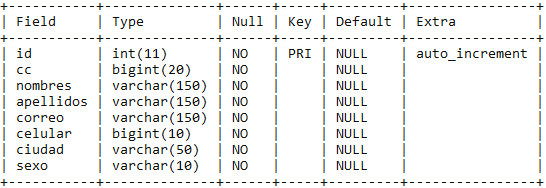

Para el ejercicio de conexión utilizaremos como referencia una base de datos con nombre (unad), dicha base de datos posee una unica tabla llamada usuarios, la cual tiene la siguiente estructura:

Pasos para realizar una conexion a una base de datos:
Definir varibles con los datos de acceso al servidor MySQL como lo son el usuario, contraseña, servidor y el nombre de la base de datos.
Despues utilizamos el contructor new PDO el cual tiene la siguiente estructura:
Con esto ya nos habremos conectado a la base de datos.
Para saber con exactitud si tenemos algun error o si nos hemos conectado a la base de datos correctamente utilizaremos try catch con la exepción que nos proporciona pdo llamada PDOException.